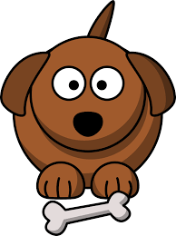

Mopping the dog, Franklin, is a bit challenging at times. But it's nothing that Carlos can't handle. Especially on a day like today. Now the only obstacle stanind in the way is what mopping device should he use?
Swiffer wet jet
A dirty old mop